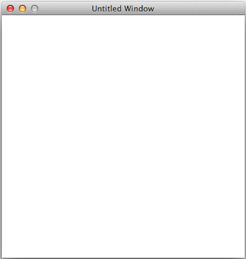
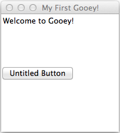

Tutorials¶
These tutorials are here to show examples of basic Gooey GUIs. If you’re just starting to learn Gooey, you might want to go through some or all of the tutorials before you make your own GUI.
Window, Text, and Button Tutorial¶
To start using Gooey, go to the terminal and navigate to the project folder. Type in the terminal:
python3 gooey.py
Your Gooey editor will appear.

You can now enter the Gooey language into the editor.
To start, make an empty window. Type in the editor:
make Window win.
When you’re ready to run your GUI, hit the play button at the bottom right corner.

This is your live preview. Right now it’s a little boring.
Make the window bigger or smaller with the set command. The set command allows you to modify one or more things at a time. Try adjusting the title of the window, which will appear in the bar across the top. Type:
set win size 200 200, title "My First Gooey".
An empty window is useless though. To add writing to your GUI, you’ll need to add a Text object. Type:
make Text greeting with text "Welcome to Gooey!".

Now try making a button. If you don’t specify some attributes, Gooey will fill it in for you. Type:
make Button go with position left.
After you Run, your GUI should look like this
Your button is currently useless. You can click it, but since we haven’t given it an action attribute, it won’t do anything. You can modify existing objects further by using the set function. You can also write as many lines of Gooey code you want in the editor before you hit run.
Try:
set go text "Go", action windowChangeColor green.
make Button stop with text "Stop", position right, action windowChangeColor red.
Try clicking on the button, see what happens. Gooey has a number of built in actions which you can find in the Actions section of the Gooey Docs.
FormattedText, TextBox, Checkboxes, and Function Tutorial¶
Now, let’s try making a slightly more complicated Gooey.
Remember, always start by making a window:
make Window win with title "Gooey Two", size 400 500, color #8fefdc.
There are times when you might want your users to write something out. A TextBox is perfect in this situation! Type:
make TextBox comments with text "Tell me your thoughts".
make Button submit with text "Submit", position 0 150.
So far, everything looks the same. One way to diversify your interface to fit your asthetic is to use FormattedText options:
make FormattedText cbtitle with text "Choose something:", font "Comic Sans MS", underline true.
You’re going to have to wait to put that object somewhere. Maybe instead of direct input, you merely want your users to choose between a few choices. Try setting the title of some Checkboxes with your new FormattedText object. A simple Checkboxes object looks like:
make Checkboxes yummy with title cbtitle, options "Apple" "Peach" "Pumpkin Pie", position 270 0.

Gooey only has a few default actions - lucky, users can make their own! A simple function to simply change the window color looks like this:
function myFunction(win) does set win color cyan.
After making a function, there are two ways to use it. To run myFucntion on the Window w, either you can say:
run myFunction(w).
or you can turn your function into an action for Buttons and MenuItems
make Button change with action myFunction(w).
You may want to write all the code in a .txt file instead of dynamically generating it in the Gooey editor. You can rum those files by typing in the terminal:
python3 gooey.py input.txt
For everything in this tutorial, put the following into a .txt file.
make Window w with title “Gooey Two”, size 400 500, color #8fefdc. make TextBox comments with text “Tell me your thoughts”. function change(win) does set win color cyan. make Button sumbit with text “Submit”, position 0 150, action change w. make FormattedText cbtitle with text “Choose something:”, font “Comic Sans MS”, underline true.
Now you’ve gone through all the main components of Gooey. You’re ready to make your own now!
Now onto one of the most complex components of Gooey: Menus.
The basic Menu object will keep track of the different menus you plan on having. For example:
make Menu toplevel with options file edit.
will create two different drop down menu lists. To populate these lists, you need MenuItem objects. They should look like this:
make MenuItem file with
title "File",
options "Quit":quit
make MenuItem edit with
title "Edit",
options "Change color":quit "Change size":quit.
make MenuItem edit with title "Edit",
options "Change color":myFunction(w) "Change size":quit.
All of these actions will close your program. You can create your own object actions by making functions.